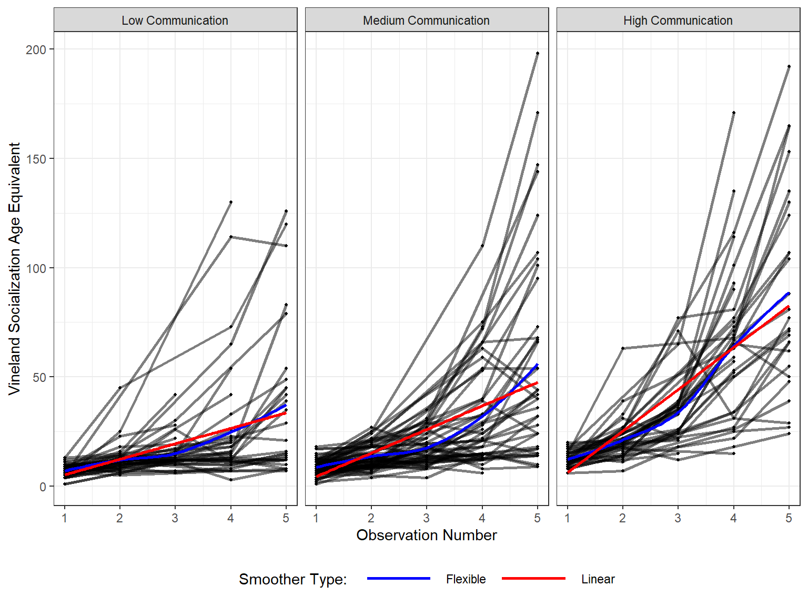
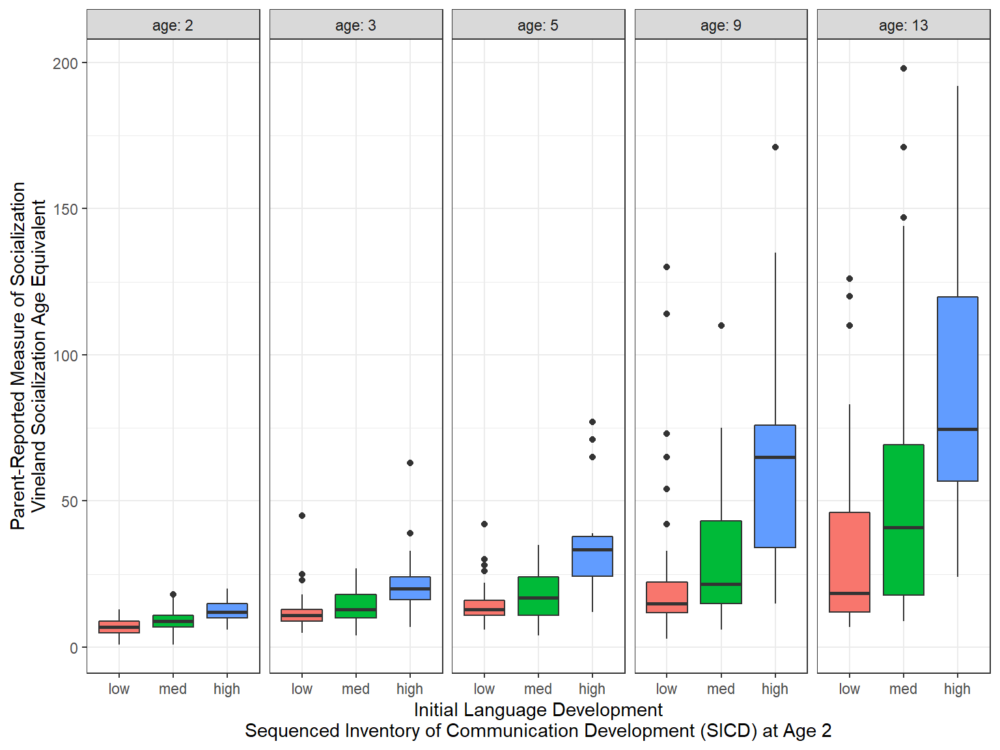

9 Hedeker & Gibbons: Longitudinal Example
library(tidyverse) # dplyr, tidyr, ggplot, the pipe, ect.
library(haven) # read in SPSS dataset
library(furniture) # nice table1() descriptives
library(stargazer) # display nice tables: summary & regression
library(texreg) # Convert Regression Output to LaTeX or HTML Tables
library(psych) # contains some useful functions, like headTail
library(car) # Companion to Applied Regression
library(lme4) # Linear, generalized linear, & nonlinear mixed models
library(HLMdiag) # Diagnostic Tools for for nlme & lmer4
library(sjstats) # ICC calculations
library(sjPlot) # Quick predicitive and diagnostic plots
library(optimx) # Different optimizers to solve mlm's
library(VIM) # Visualization and Imputation of Missing Values
library(effects) # Estimated Marginal Means9.1 Background
Riesby and associates (Riesby et al., 1977) examined the relationship between Imipramine (IMI) and Desipramine (DMI) plasma levels and clinical response in 66 depressed inpatients (37 endogenous and 29 non-endogenous). The IMI and DMI measures were only taken in the later weeks and are not used here.
Dependent or outcome variable:
hamdHamilton Depression Scores (HD)
Independent or predictor variables:
endogPrepression Diagnosis- endogenous
- non-endogenous/reactive
- endogenous
- IMI (imipramine) drug-plasma levels (µg/l)
- antidepressant given 225 mg/day, weeks 3-6
- DMI (desipramine) drug-plasma levels (µg/l)
- metabolite of imipramine
data_raw <- haven::read_spss("http://www.uic.edu/~hedeker/riesby.sav") %>% # read from teh webpage
dplyr::select(-intrcpt, -endweek) # de-select or delete some variables data_raw %>%
psych::headTail(top = 11, bottom = 8) id hamd week endog
1 101 26 0 0
2 101 22 1 0
3 101 18 2 0
4 101 7 3 0
5 101 4 4 0
6 101 3 5 0
7 103 33 0 0
8 103 24 1 0
9 103 15 2 0
10 103 24 3 0
11 103 15 4 0
12 ... ... ... ...
13 360 28 4 1
14 360 33 5 1
15 361 30 0 1
16 361 22 1 1
17 361 11 2 1
18 361 8 3 1
19 361 7 4 1
20 361 19 5 19.1.1 Long Format
data_long <- data_raw %>% # save the dataset as a new name
dplyr::filter(!is.na(hamd)) %>% # remove NA or missing scores
dplyr::mutate(id = factor(id)) %>% # declare grouping var a factor
dplyr::mutate(endog = factor(endog, # attach labels to a grouping variable
levels = c(0, 1), # order of the levels should match levels
labels = c("Reactive", # order matters!
"Endogenous"))) %>%
dplyr::select(id, week, endog, hamd) %>% # select the order of variables to include
dplyr::arrange(id, week) # sort observations data_long %>%
psych::headTail(top = 11, bottom = 8) id week endog hamd
1 101 0 Reactive 26
2 101 1 Reactive 22
3 101 2 Reactive 18
4 101 3 Reactive 7
5 101 4 Reactive 4
6 101 5 Reactive 3
7 103 0 Reactive 33
8 103 1 Reactive 24
9 103 2 Reactive 15
10 103 3 Reactive 24
11 103 4 Reactive 15
12 <NA> ... <NA> ...
13 609 2 Endogenous 22
14 609 3 Endogenous 14
15 609 4 Endogenous 15
16 609 5 Endogenous 2
17 610 0 Endogenous 34
18 610 2 Endogenous 33
19 610 3 Endogenous 23
20 610 5 Endogenous 119.1.2 Wide Format
data_wide <- data_long %>% # save the dataset as a new name
tidyr::spread(key = week, # name the varaible that specifies how to spread
value = hamd, # name the variable to be spread out
sep = "_") # add to combine the key-variables name before its valueNotice the missing values, displayed as NA.
data_wide %>%
psych::headTail() id endog week_0 week_1 week_2 week_3 week_4 week_5
1 101 Reactive 26 22 18 7 4 3
2 103 Reactive 33 24 15 24 15 13
3 104 Endogenous 29 22 18 13 19 0
4 105 Reactive 22 12 16 16 13 9
5 <NA> <NA> ... ... ... ... ... ...
6 607 Endogenous 30 39 30 27 20 4
7 608 Reactive 24 19 14 12 3 4
8 609 Endogenous <NA> 25 22 14 15 2
9 610 Endogenous 34 <NA> 33 23 <NA> 119.2 Exploratory Data Analysis
9.2.1 Diagnosis Group
# Knit to Website: output = "html"
# Knit to PDF: output = "latex2"
# View on Screen: output = ""text", or "markdown", "html"
data_long %>%
dplyr::filter(week == 0) %>%
furniture::table1("Depression Type" = endog,
output = "html")| Mean/Count (SD/%) | |
|---|---|
| n = 61 | |
| Depression Type | |
| Reactive | 28 (45.9%) |
| Endogenous | 33 (54.1%) |
9.2.2 Missing Data & Attrition
Plot the amount of missing vlaues and the amount of each patter of missing values.
data_wide %>%
VIM::aggr(numbers = TRUE, # shows the number to the far right
prop = FALSE) # shows counts instead of proportions
9.2.3 Depression Over Time, by Group
9.2.3.1 Table of Means
Default = COMPLETE CASES ONLY!!!
Note - the sample size at each time point is the same, but subjects are only included if they have data at every time point
# Knit to Website: output = "html"
# Knit to PDF: output = "latex2"
# View on Screen: output = ""text", or "markdown", "html"
data_wide %>%
furniture::table1(week_0, week_1, week_2,
week_3, week_4, week_5,
splitby = ~ endog,
test = TRUE,
na.rm = TRUE, # default: COMPLETE CASES ONLY!!!!!
output = "html") | Reactive | Endogenous | P-Value | |
|---|---|---|---|
| n = 25 | n = 21 | ||
| week_0 | 0.196 | ||
| 22.4 (3.9) | 24.1 (4.9) | ||
| week_1 | 0.01 | ||
| 20.1 (3.7) | 23.9 (5.5) | ||
| week_2 | 0.306 | ||
| 17.3 (4.3) | 19.0 (6.0) | ||
| week_3 | 0.406 | ||
| 15.9 (5.8) | 17.5 (6.9) | ||
| week_4 | 0.509 | ||
| 12.8 (6.7) | 14.2 (7.0) | ||
| week_5 | 0.48 | ||
| 11.4 (6.5) | 13.0 (8.7) |
Specify All data:
note - that the smaple sizes will be different for each time point
# Knit to Website: output = "html"
# Knit to PDF: output = "latex2"
# View on Screen: output = ""text", or "markdown", "html"
data_wide %>%
furniture::table1(week_0, week_1, week_2,
week_3, week_4, week_5,
splitby = ~ endog,
test = TRUE,
na.rm = FALSE, # INCLUDES ALL DATA !!!!
output = "html") | Reactive | Endogenous | P-Value | |
|---|---|---|---|
| n = 29 | n = 37 | ||
| week_0 | 0.295 | ||
| 22.8 (4.1) | 24.0 (4.8) | ||
| week_1 | 0.029 | ||
| 20.5 (3.8) | 23.0 (5.1) | ||
| week_2 | 0.081 | ||
| 17.0 (4.3) | 19.3 (6.1) | ||
| week_3 | 0.227 | ||
| 15.3 (6.2) | 17.3 (6.6) | ||
| week_4 | 0.295 | ||
| 12.6 (6.7) | 14.5 (7.2) | ||
| week_5 | 0.473 | ||
| 11.2 (6.3) | 12.6 (8.0) |
9.2.3.2 Using the LONG formatted dataset
Each person’s data is stored on multiple lines, one for each time point.
FOR ALL DATA!
data_sum_all <- data_long %>%
dplyr::group_by(endog, week) %>% # specify the groups
dplyr::summarise(hamd_n = n(), # count of valid scores
hamd_mean = mean(hamd), # mean score
hamd_sd = sd(hamd), # standard deviation of scores
hamd_sem = hamd_sd / sqrt(hamd_n)) # stadard error for the mean of scores
data_sum_all# A tibble: 12 x 6
# Groups: endog [?]
endog week hamd_n hamd_mean hamd_sd hamd_sem
<fct> <dbl> <int> <dbl> <dbl> <dbl>
1 Reactive 0 28 22.8 4.12 0.779
2 Reactive 1 29 20.5 3.83 0.712
3 Reactive 2 28 17 4.35 0.821
4 Reactive 3 29 15.3 6.17 1.15
5 Reactive 4 29 12.6 6.72 1.25
6 Reactive 5 27 11.2 6.34 1.22
7 Endogenous 0 33 24 4.85 0.844
8 Endogenous 1 34 23 5.10 0.874
9 Endogenous 2 37 19.3 6.08 1.000
10 Endogenous 3 36 17.3 6.56 1.09
11 Endogenous 4 34 14.5 7.17 1.23
12 Endogenous 5 31 12.6 7.96 1.43 FOR COMPLETE CASES ONLY!!!
data_sum_cc <- data_long %>%
dplyr::group_by(id) %>% # group-by participant
dplyr::mutate(person_vsae_n = n()) %>% # count the number of valid VSAE scores
dplyr::filter(person_vsae_n == 6) %>% # restrict to only thoes children with 5 valid scores
dplyr::group_by(endog, week) %>% # specify the groups
dplyr::summarise(hamd_n = n(), # count of valid scores
hamd_mean = mean(hamd), # mean score
hamd_sd = sd(hamd), # standard deviation of scores
hamd_sem = hamd_sd / sqrt(hamd_n)) # stadard error for the mean of scores
data_sum_cc# A tibble: 12 x 6
# Groups: endog [?]
endog week hamd_n hamd_mean hamd_sd hamd_sem
<fct> <dbl> <int> <dbl> <dbl> <dbl>
1 Reactive 0 25 22.4 3.90 0.781
2 Reactive 1 25 20.1 3.68 0.737
3 Reactive 2 25 17.3 4.34 0.867
4 Reactive 3 25 15.9 5.84 1.17
5 Reactive 4 25 12.8 6.68 1.34
6 Reactive 5 25 11.4 6.54 1.31
7 Endogenous 0 21 24.1 4.87 1.06
8 Endogenous 1 21 23.9 5.47 1.19
9 Endogenous 2 21 19.0 6.01 1.31
10 Endogenous 3 21 17.5 6.86 1.50
11 Endogenous 4 21 14.2 6.98 1.52
12 Endogenous 5 21 13.0 8.73 1.90 9.2.3.3 Person-Profile Plot or Spaghetti Plot
Use the data in LONG format.
A scatterplot of all observations of depression scores over time, joining the dots of each individual’s data.
NOTE: Not all lines have a point for every week!
data_long %>%
ggplot(aes(x = week,
y = hamd)) +
geom_point() +
geom_line(aes(group = id)) # join points that belong to the same "id"
data_long %>%
ggplot(aes(x = week,
y = hamd,
color = endog)) + # color points and lines by the "endog" variable
geom_point() +
geom_line(aes(group = id))
data_long %>%
ggplot(aes(x = week,
y = hamd)) +
geom_point() +
geom_line(aes(group = id)) +
facet_grid( ~ endog) # side-by-side pandels by the "endog" variable
data_long %>%
ggplot(aes(x = week %>% factor(),
y = hamd)) +
geom_boxplot() + # compare center and spread
facet_grid( ~ endog) 
data_long %>%
ggplot(aes(x = week %>% factor(),
y = hamd)) +
geom_violin() + # similar to boxplots to show distribution
facet_grid( ~ endog) 
data_long %>%
ggplot(aes(x = week,
y = hamd)) +
geom_point() +
geom_line(aes(group = id)) +
facet_grid( ~ endog) +
geom_smooth() + # DEFAULTS: method = "loess", se = TRUE, color = "blue"
geom_smooth(method = "lm",
se = FALSE,
color = "hot pink")
data_long %>%
ggplot(aes(x = week,
y = hamd)) +
geom_point() +
geom_line(aes(group = id)) +
facet_grid( ~ endog) +
geom_smooth(aes(color = "Flexible"),
method = "loess",
se = FALSE,) +
geom_smooth(aes(color = "Linear"),
method = "lm",
se = FALSE) +
scale_color_manual(name = "Smoother Type: ",
values = c("Flexible" = "blue",
"Linear" = "red")) +
theme_bw() +
theme(legend.position = "bottom")
9.3 Patterns in the Outcome Over Time
9.3.1 Variance-Covariance
9.3.1.1 Full Matrix
- Variances are down the diagonal
- Increasing variance over time violates the ANOVA assumption of homogeity of variance
data_wide %>%
dplyr::select(starts_with("week_")) %>% # just the outcome(s)
cov(use = "complete.obs") %>% # covariance matrix, LIST-wise deletion
round(3) week_0 week_1 week_2 week_3 week_4 week_5
week_0 19.421 10.716 9.523 12.350 9.062 7.376
week_1 10.716 24.236 12.545 15.930 11.592 8.471
week_2 9.523 12.545 26.773 23.848 23.858 20.657
week_3 12.350 15.930 23.848 39.755 33.316 29.728
week_4 9.062 11.592 23.858 33.316 45.943 37.107
week_5 7.376 8.471 20.657 29.728 37.107 57.332data_wide %>%
dplyr::select(starts_with("week_")) %>% # just the outcome(s)
cov(use = "pairwise.complete.obs") %>% # covariance matrix, PAIR-wise deletion
round(3) week_0 week_1 week_2 week_3 week_4 week_5
week_0 20.551 10.115 10.139 10.086 7.191 6.278
week_1 10.115 22.071 12.277 12.550 10.264 7.720
week_2 10.139 12.277 30.091 25.126 24.626 18.384
week_3 10.086 12.550 25.126 41.153 37.339 23.992
week_4 7.191 10.264 24.626 37.339 48.594 30.513
week_5 6.278 7.720 18.384 23.992 30.513 52.1209.3.1.2 Just Variances
Notice the variance in scores increases over time, which is seen in the side-by-side boxplots.
data_wide %>%
dplyr::select(starts_with("week_")) %>% # just the outcome(s)
cov(use = "pairwise.complete.obs") %>% # covariance matrix, PAIR-wise deletion
diag() # extracts just the variances week_0 week_1 week_2 week_3 week_4 week_5
20.55082 22.07117 30.09135 41.15288 48.59447 52.12008 9.3.2 Correlation
9.3.2.1 Full Matrix
Pairwise relationships are easier to eye-ball magnitude when presented as correlations, rather than covariances, due to the relative scale.
data_wide %>%
dplyr::select(starts_with("week_")) %>% # just the outcome(s)
cor(use = "complete.obs") %>% # correlation matrix - LIST-wise deletion
round(2) week_0 week_1 week_2 week_3 week_4 week_5
week_0 1.00 0.49 0.42 0.44 0.30 0.22
week_1 0.49 1.00 0.49 0.51 0.35 0.23
week_2 0.42 0.49 1.00 0.73 0.68 0.53
week_3 0.44 0.51 0.73 1.00 0.78 0.62
week_4 0.30 0.35 0.68 0.78 1.00 0.72
week_5 0.22 0.23 0.53 0.62 0.72 1.00data_wide %>%
dplyr::select(starts_with("week_")) %>% # just the outcome(s)
cor(use = "pairwise.complete.obs") %>% # correlation matrix - PAIR-wise deletion
round(2) week_0 week_1 week_2 week_3 week_4 week_5
week_0 1.00 0.49 0.41 0.33 0.23 0.18
week_1 0.49 1.00 0.49 0.41 0.31 0.22
week_2 0.41 0.49 1.00 0.74 0.67 0.46
week_3 0.33 0.41 0.74 1.00 0.82 0.57
week_4 0.23 0.31 0.67 0.82 1.00 0.65
week_5 0.18 0.22 0.46 0.57 0.65 1.009.3.2.2 Visualization
Looking for patterns is always easier with a plot. All RM or mixed ANOVA assume sphericity or compound symmetry, meaning that all the correlations in the matrix would be the same. This is not the case for these data. Instead we see a classic pattern of corralary decay. Measures taken close in time, say 1 week apart, exhibit the highest degree of correlation. The farther apart in time that two measures are taken, the less correlated they are. Note that the adjacent measures become more highly correlated, too. This can be due to attrition; later time points having a smaller sample size.
data_wide %>%
dplyr::select(starts_with("week_")) %>% # just the outcome(s)
cor(use = "pairwise.complete.obs") %>% # correlation matrix
corrplot::corrplot.mixed(upper = "ellipse")
9.3.3 For Each Group
It can be a good ideal to investigate if the groups exhibit a similar pattern in correlation.
Reactive Depression
data_wide %>%
dplyr::filter(endog == "Reactive") %>%
dplyr::select(starts_with("week_")) %>% # just the outcome(s)
cor(use = "pairwise.complete.obs") %>% # correlation matrix
round(2) week_0 week_1 week_2 week_3 week_4 week_5
week_0 1.00 0.59 0.21 0.13 0.01 0.16
week_1 0.59 1.00 0.28 0.36 0.37 0.51
week_2 0.21 0.28 1.00 0.55 0.58 0.67
week_3 0.13 0.36 0.55 1.00 0.75 0.68
week_4 0.01 0.37 0.58 0.75 1.00 0.83
week_5 0.16 0.51 0.67 0.68 0.83 1.00Endogenous Depression
data_wide %>%
dplyr::filter(endog == "Endogenous") %>%
dplyr::select(starts_with("week_")) %>% # just the outcome(s)
cor(use = "pairwise.complete.obs") %>% # correlation matrix
round(2) week_0 week_1 week_2 week_3 week_4 week_5
week_0 1.00 0.42 0.47 0.44 0.37 0.18
week_1 0.42 1.00 0.55 0.42 0.23 0.03
week_2 0.47 0.55 1.00 0.83 0.72 0.35
week_3 0.44 0.42 0.83 1.00 0.86 0.49
week_4 0.37 0.23 0.72 0.86 1.00 0.52
week_5 0.18 0.03 0.35 0.49 0.52 1.009.4 Multilevel Models - Null or Emptly Models
9.4.1 Heiarchical Null: Fixed Intercepts with Random Intercepts
For purely nested or heiarchical designs we often start by fitting a null model with only a fixed intercept and random intercept variance.
fit_lmer_0re <- lme4::lmer(hamd ~ 1 + (1|id),
data = data_long,
REML = TRUE)9.4.1.1 Caluclate the ICC
sjstats::icc(fit_lmer_0re)
Linear mixed model
Family : gaussian (identity)
Formula: hamd ~ 1 + (1 | id)
ICC (id): 0.2685Interpretation: Over 26% of the variance in depression scores is attributable to person-to-person differenences.
9.4.2 Longitudinal Null: Fixed Intercepts and Time with Random Intercepts
Since this situation deals with longitudinal data, it is more appropriate to start off including our time variable in the null model as a fixed effect only.
fit_lmer_1re <- lme4::lmer(hamd ~ week + (1|id),
data = data_long,
REML = TRUE)9.4.2.1 Caluclate the ICC
sjstats::icc(fit_lmer_1re)
Linear mixed model
Family : gaussian (identity)
Formula: hamd ~ week + (1 | id)
ICC (id): 0.4627Interpretation: Nearly HALF of the variance in depression scores not explained by the linear effect of time is attributable to person-to-person differences. Thus, subjects display considerable heterogeneity in depression levels.
This value of 46% is an oversimplification of the correlation matrix above.
9.4.3 Single-Level Null: No Random Effects
To compare, fit the single level regression model
fit_lm_1 <- lm(hamd ~ week,
data = data_long)# Knit to Website: texreg::htmlreg()
# Knit to PDF: texreg::texreg()
# View on Screen: texreg::screenreg()
texreg::htmlreg(list(fit_lm_1, fit_lmer_1re),
custom.model.names = c("ML 1 Level", "MLM 2 Levels"),
caption = "MLM: Longitudinal Null Models",
caption.above = TRUE)| ML 1 Level | MLM 2 Levels | ||
|---|---|---|---|
| (Intercept) | 23.60*** | 23.55*** | |
| (0.55) | (0.64) | ||
| week | -2.41*** | -2.38*** | |
| (0.18) | (0.14) | ||
| R2 | 0.32 | ||
| Adj. R2 | 0.32 | ||
| Num. obs. | 375 | 375 | |
| RMSE | 5.95 | ||
| AIC | 2294.73 | ||
| BIC | 2310.43 | ||
| Log Likelihood | -1143.36 | ||
| Num. groups: id | 66 | ||
| Var: id (Intercept) | 16.45 | ||
| Var: Residual | 19.10 | ||
| p < 0.001, p < 0.01, p < 0.05 | |||
For the multilevel model, the Wald tests indicated the fixed intercept is significant (no surprized that the depressions scores are not zero at baseline). More of note is the significance of the fixed effect of time. This signifies that depression scores are declining over time. On average, patients are improving across time, by an average of 2.4 points a week.
Note: the fixed estimates are very similar for the two models, but the stnadard errors are different. Additionally, whereas the single-level regression lumps all remaining variance together (\(\sigma^2\)), the multilevel model seperates it into within-subjects (\(\sigma^2_{u0}\) or \(\tau_{00}\)) and between-subjects variance (\(\sigma^2_{e}\) or \(\sigma^2\)).
9.4.3.1 Compare Residual Variance
sigma(fit_lm_1)^2[1] 35.3997sjstats::re_var(fit_lmer_1re) # in longitudinal data, a group of observations = a participant or person Within-group-variance: 19.099
Between-group-variance: 16.446 (id)“One statistician’s error term is another’s career!”
Hedeker and Gibbons (2006), page 56
One way to judge a model is to compare the estimated means to the observed means to see how accuratedly they are represented by the model. This excellent fit of the estimated marginal means to the observed data supports the hypothesis that the change in depression across time is LINEAR.
obs <- data_long %>%
dplyr::group_by(week) %>%
dplyr::summarise(observed = mean(hamd, na.rm = TRUE))
effects::Effect(focal.predictors = "week",
mod = fit_lmer_1re,
xlevels = list(week = 0:5)) %>%
data.frame() %>%
dplyr::rename(estimated = fit) %>%
dplyr::left_join(obs, by = "week") %>%
dplyr::select(week, observed, estimated) %>%
dplyr::mutate(diff = observed - estimated) %>%
pander::pander(caption = "Hedeker and Gibbons's Table 4.4 on page 55") %>%
print(digits = 2)[1] "\n-----------------------------------------\n week observed estimated diff \n------ ---------- ----------- -----------\n 0 23.44 23.55 -0.109 \n\n 1 21.84 21.18 0.6652 \n\n 2 18.31 18.8 -0.4928 \n\n 3 16.42 16.42 -0.009553 \n\n 4 13.62 14.05 -0.4303 \n\n 5 11.95 11.67 0.2745 \n-----------------------------------------\n\nTable: Hedeker and Gibbons's Table 4.4 on page 55\n\n"
attr(,"class")
[1] "knit_asis"
attr(,"knit_cacheable")
[1] NA9.5 Multilevel Models: Theory Driven Model
9.5.1 Fit RI and RIAS Models
The researcher specifically wants to know if the trajectory over time differs for the two types of depression. This translates into a fixed effects interaction between time and group.
Start by comapreing random intercepts only (RI) to a random intercetps and slopes (RIAS) model.
fit_lmer_1 <- lme4::lmer(hamd ~ week*endog + (1|id), # MLM-RI
data = data_long,
REML = TRUE)
fit_lmer_2 <- lme4::lmer(hamd ~ week*endog + (week|id), # MLM-RIAS
data = data_long,
REML = TRUE)9.5.2 Assess the Signifcance
anova(fit_lmer_1, fit_lmer_2, refit = FALSE)Data: data_long
Models:
fit_lmer_1: hamd ~ week * endog + (1 | id)
fit_lmer_2: hamd ~ week * endog + (week | id)
Df AIC BIC logLik deviance Chisq Chi Df Pr(>Chisq)
fit_lmer_1 6 2294.5 2318.1 -1141.2 2282.5
fit_lmer_2 8 2230.0 2261.4 -1107.0 2214.0 68.508 2 1.329e-15 ***
---
Signif. codes: 0 '***' 0.001 '**' 0.01 '*' 0.05 '.' 0.1 ' ' 1The more complicated model (RAIS) is supported.
9.5.3 Table of Prameter Estimates
# Knit to Website: texreg::htmlreg()
# Knit to PDF: texreg::texreg()
# View on Screen: texreg::screenreg()
texreg::htmlreg(fit_lmer_2, single.row = TRUE)| Model 1 | ||
|---|---|---|
| (Intercept) | 22.48 (0.81)*** | |
| week | -2.37 (0.32)*** | |
| endogEndogenous | 1.99 (1.09) | |
| week:endogEndogenous | -0.03 (0.43) | |
| AIC | 2229.99 | |
| BIC | 2261.40 | |
| Log Likelihood | -1106.99 | |
| Num. obs. | 375 | |
| Num. groups: id | 66 | |
| Var: id (Intercept) | 12.25 | |
| Var: id week | 2.17 | |
| Cov: id (Intercept) week | -1.52 | |
| Var: Residual | 12.21 | |
| p < 0.001, p < 0.01, p < 0.05 | ||
9.5.4 Model Assumptions
Use residual plots to look for violations of the model assumptions.
sjPlot::plot_model(fit_lmer_2,
type = "diag")[[1]]
[[2]]
[[2]]$id
[[3]]
[[4]]
9.5.5 Plot of the Estimated Marginal Means
9.5.5.1 Quick and Default
sjPlot::plot_model(fit_lmer_2,
type = "pred",
terms = c("week", "endog"))